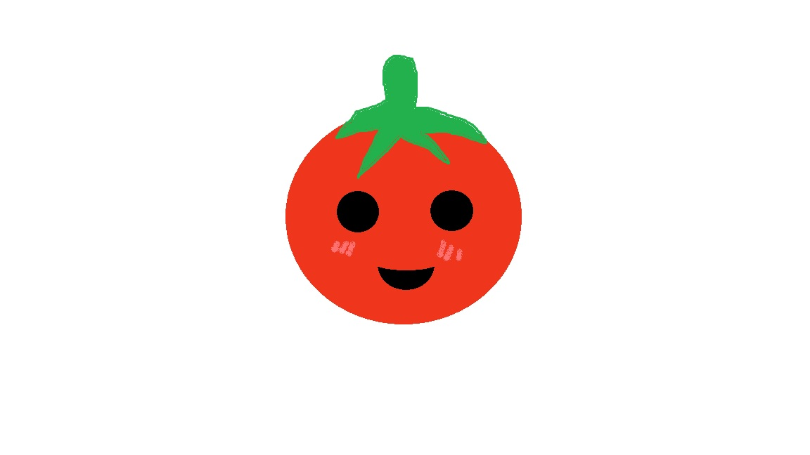

KNOWTIME

Full Stack Developer

Full Stack Developer

Frontend and Backend Developer

Web Developer

Frontend and Backend Developer

Web Developer

Web Developer

Web Developer
Students often struggle with time management, fail to track progress effectively, and underestimate what can be accomplished during a work session. Our time management and study skills tool will address these issues by providing those who struggle with time management a community of support and various studying tools. This tool is poised to revolutionize how individuals manage their time and enhance their study habits.
Grade tracking will be based on user-inputted grades. It will look at their grades, and the time spent studying, which may be entered by the student or automatically generated if the task was completed during a study session within the website. It will then generate a graph correlating time spent studying with the grade they received. They will also be able to filter this graph by tags. This will allow students to view a particular class to determine how they can improve. The student will set a goal for the grade and view how they are progressing over time.
The Pomodoro timer technique was created by Francesco Cirillo in the 1980s while he was a university student. To follow this technique, the student sets a timer for 25 minutes to complete a task. Once the timer goes off, the student takes a 5-minute break and then continues to work again for another 25 mins. After four sessions, the student takes a 15–30-minute break (Scroggs, 2022).
A study plan will be generated based on various factors that will be entered by the student. Examples of information entered that will be considered are assignment due dates, exam dates, and times that the student has specified they are busy. Study plans also consider time spent on similarly tagged tasks and the need for breaks between tasks.
A Task is any assignment that the student needs to complete, whether that be a homework assignment, an exam, or just making time to study or gather materials. Tasks can have multiple tags and are created by the student in the web application.
Ariella, S. (2022, November 14). 22 Time Management Statistics [2022] – Zippia. Zippia. Retrieved from https://www.zippia.com/advice/time-management-statistics/
Cambridge Dictionary. (2019, November 20). TIME MANAGEMENT | definition in the Cambridge English Dictionary. Cambridge.org. Retrieved from https://dictionary.cambridge.org/us/dictionary/english/time-management
College Success Plan. (n.d.). Where has the time gone? College Success Plan. Retrieved from https://collegesuccessplan.com/blog/where-has-the-time-gone
Evernote. (2019). Best Note Taking App | Organize Your Notes with Evernote. Retrieved February 13, 2024, from Evernote website: https://evernote.com/
Forest. (2016). Forest. Retrieved February 13, 2024, from Forestapp.cc website: https://www.forestapp.cc/
iStudiez Team. (n.d.). iStudiez Pro for iOS - Best App for Students. Retrieved February 13, 2024, from istudentpro.com website: https://istudentpro.com/
Kennedy, T. (n.d.). Support. Www.cs.odu.edu. Retrieved February 20, 2024, from https://www.cs.odu.edu/~tkennedy/cs410/latest/Public/support/
MyStudyLife. (2021, March 27). My Study Life- Online Student Planner. Retrieved February 13, 2024, from MyStudyLife website: https://mystudylife.com/
Notion. (2019). Notion – The all-in-one workspace for your notes, tasks, wikis, and databases. Retrieved February 13, 2024, from Notion website: https://www.notion.so/
Remember The Milk Inc. (2020). Remember The Milk: Online to-do list and task management. Retrieved February 13, 2024, from Rememberthemilk.com website: https://www.rememberthemilk.com/
Scroggs, L. (2022). The Pomodoro Technique – Why It Works & How To Do It. Retrieved February 14, 2024, from Todoist website: https://todoist.com/productivity-methods/pomodoro-technique